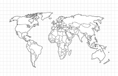

Os conflitos mais curiosos da história humana
Por toda a história da humanidade, houve vários conflitos, e neste site, eu vou mostrar os conflitos mais marcantes e mais curiosos da história.
Primeiramente: as 3 guerras com mais mortos da história
- Segunda Guerra Mundial: 70 a 85 milhões de mortos
- Rebelião Taiping: 20 a 70 milhões de mortos
- A Guerra dos Três Reinos: 36 a 40 milhões de mortos
Outras guerras
A Guerra Anglo-Zanzibari
Esta é a guerra mais curta da história, que demorou apenas 38 a 40 minutos, travada entre o Reino Unido e o Sultanato de >anzibar
Guerra dos Trezentos e Trinta e Cinco Anos
Esta é a guerra mais longa da historia, que demorou 335 anos, travada entre a Holanda e as Ilhas Scilly
FIM
